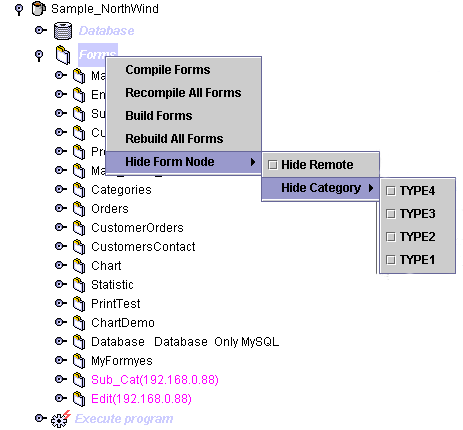
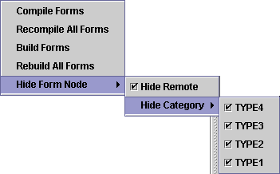
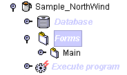
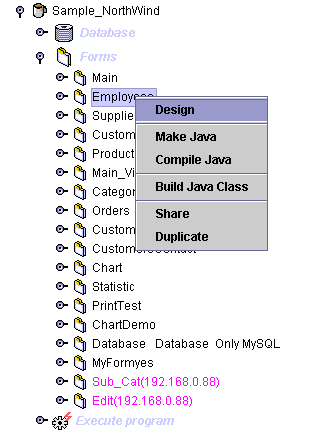
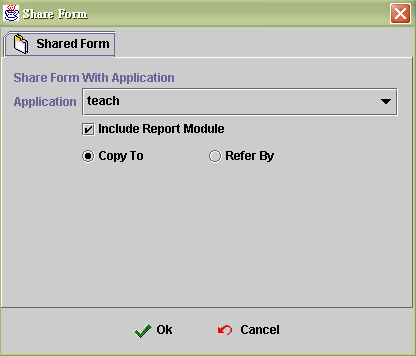
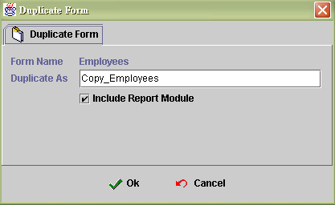

|
|
In the CH5.1 Create new form mention that category is used to classify form types. If you want to manage all forms, you can hide some category types or hide the remote forms. Your main panel will be more clear and well understanding. You can concentrate on your sub system and won't mix up with others. To open this selection menu, you need click form node first and right click mouse button.

If you check all check box, the main panel will display as below image.

The main form didn't set category therefore it won't disappear.

Design : 進入設計畫面
Make Java
|
Tips |
|
設計畫面要編譯為java class 的步驟為: Xml -> Java source -> Class 所以 Make Java : 是將 Xml 轉為 Java source code Compile Java : 是將 Java source compile 成 class Build Java Class : 則是一次把 Xml -> Java source -> Class |
Compile Java
Build Java Class

Share : You can share the form of the application to another project.
Application : Select the application you want share.
Include report module : If you check the check box, the form report will share with form.
Copy to : It will copy the form file to another project.
Refer by : Let another project reference to the form only. Not copy real form file.

Duplicate : It is duplicate the form inside the project.
Form name : Target form name will duplicated.
Duplicate as : To bring an new form.
Include report module : Duplicate the form and form report.

|
|
|
Copyright © 2001~ 2004 Probe.com.tw . All Rights Reserved.
Questions, comments, and suggestions to Service@probe.com.tw